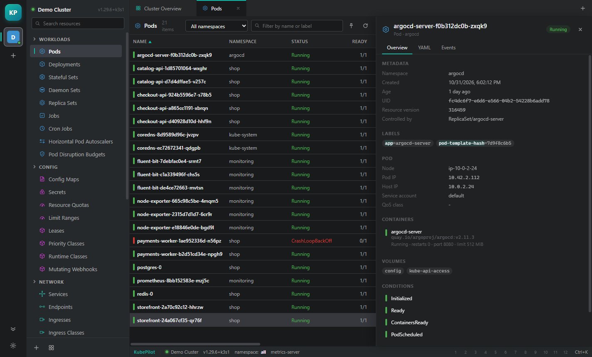
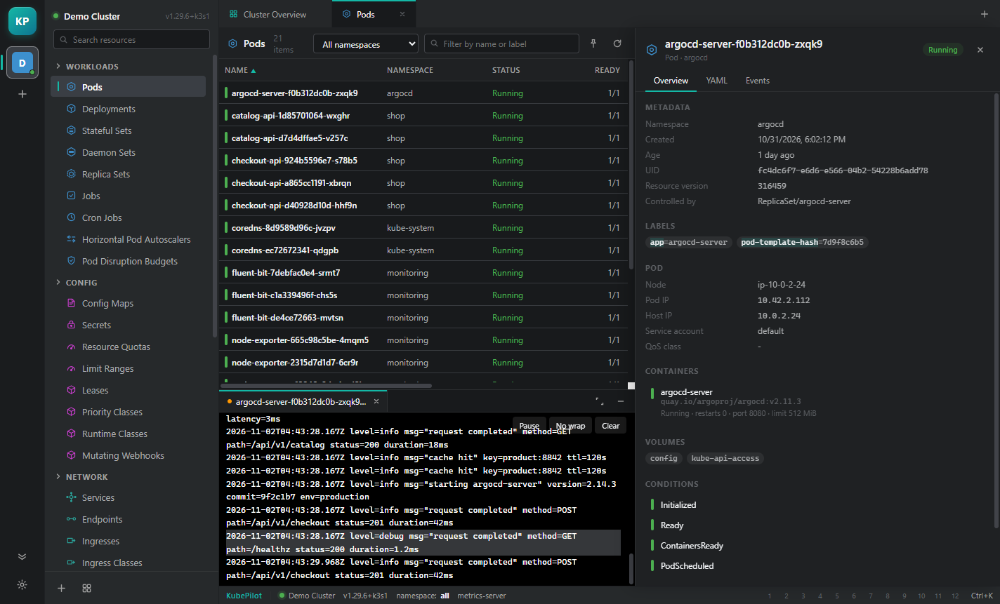
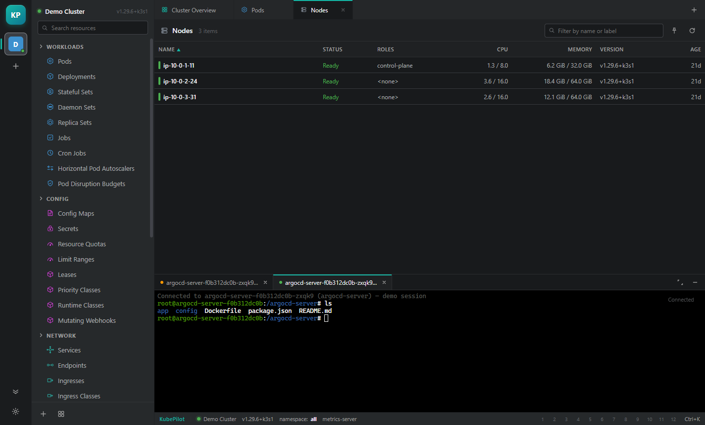
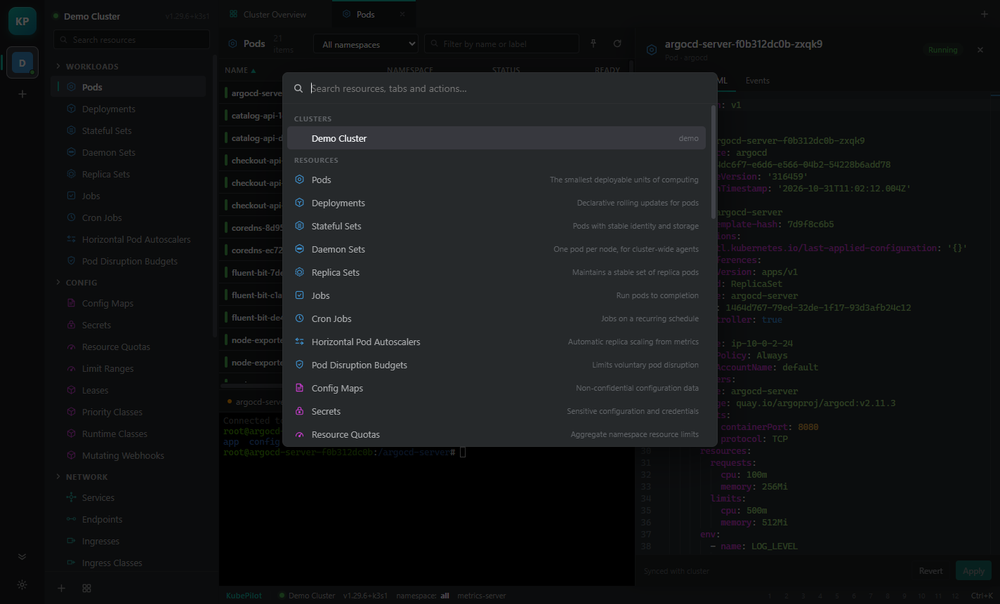
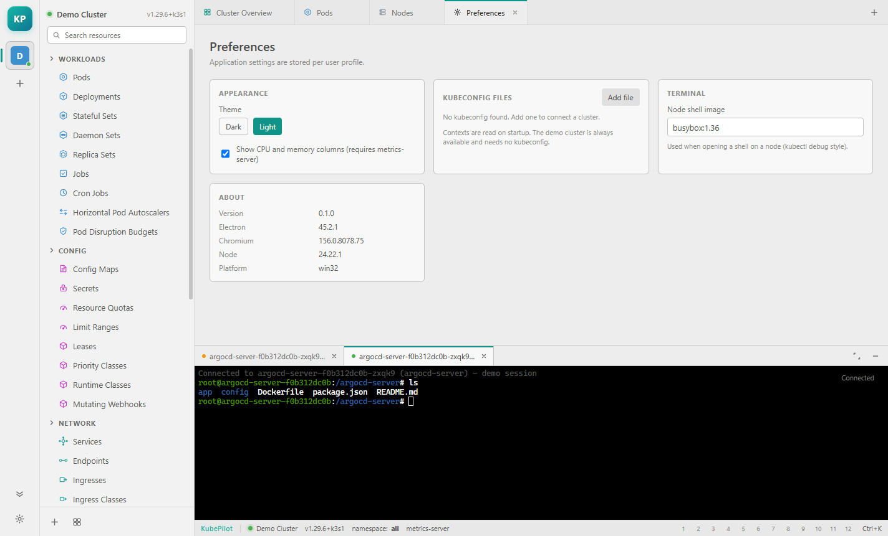

Feature guide
Every screen below is the real application, connected to a local Kubernetes cluster. Nothing here is a mockup.
Navigator & tables
The navigator lists every resource kind the API server advertises, grouped by purpose:
workloads, config, network, storage, access control, cluster and custom resources. Custom
resources are discovered from /apis, so CRDs appear without configuration.

- Sort any column by clicking its header; click again to reverse.
- Scope to a namespace with the selector, or stay on All namespaces.
- Filter is a plain substring match on the name column.
- Pin puts the current view on the hotbar in the status bar.
Tables are watch-backed. A list is fetched once, then patched from the watch stream, so a pod that restarts updates in place instead of the table reloading underneath you.
Details drawer
Double-click a row. The drawer has three tabs — Overview, YAML and Events — and stays open while you move through the table.

Status colours are computed per kind rather than read from phase. A
CrashLoopBackOff pod is red because its waiting reason says so; a Deployment
is amber when ready replicas trail desired replicas; a PVC is green only when bound.
Editing YAML
The YAML tab is a Monaco editor bound to the live object. Apply sends a
server-side apply with the field manager kubepilot, which makes repeated
applies converge instead of conflicting.

Logs
Open logs from the drawer's Actions block, or from a row's context menu. The dock follows the stream, chunked by the main process so long lines do not stall the UI.

Terminal
The terminal is a real exec session, negotiated over WebSocket with the
v5.channel.k8s.io subprotocol (falling back to v4). Channels
carry stdin, stdout, stderr, an error channel and terminal resize.

ls inside a pod — the dock keeps logs and shells side by side.Metrics
CPU and memory for pods and nodes come from metrics.k8s.io and refresh every
20 seconds. Node rows show usage against allocatable capacity.

Without metrics-server the columns fall back to requests and limits, and the status bar says metrics unavailable instead of showing zeros.
Actions
Right-click any row for the actions that apply to its kind:
| Action | Behaviour |
|---|---|
| Scale | Writes the /scale subresource — works for Deployments, StatefulSets, ReplicaSets |
| Restart | Sets a kubectl.kubernetes.io/restartedAt pod-template annotation |
| Logs / Terminal | Pods only; opens the dock against that container |
| Port forward | Spawns a managed kubectl port-forward child with live state |
| Delete | Confirms first, then deletes with the object's UID as a precondition |
Palette & hotbar
Ctrl + K opens the palette. It indexes clusters, resource kinds and
their descriptions — type cm to reach Config Maps.

Views you pin land on the hotbar in the status bar, numbered 1 to 12. Clicking a slot reopens that exact view — namespace, filter and all.
Themes & preferences
Preferences holds the theme, the metrics toggle, kubeconfig files and the node-shell image used for debug shells. Settings are stored per user, not per cluster.
